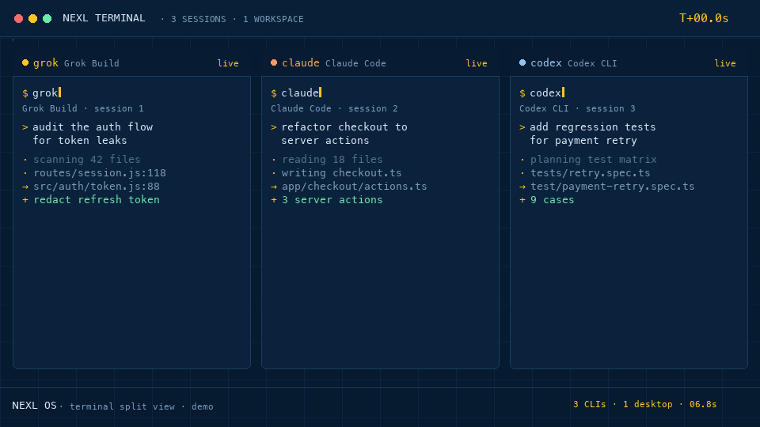

A · 终端多开
grok、claude、codex，
并排跑。
终端支持标签和 i3 式分栏，每一格是一条独立 PTY。三路模型同时开工，输出互不覆盖； 切回桌面，文件已经落盘。
- 独立 PTY每格一条会话，切走再回来还接得上
- 横竖分栏拖动分隔条改比例，窗口变了跟着重排
- 同一工作区三路改同一份文件，桌面立即可见

终端里并排跑模型，蜂群里拆活，浏览器交给自然语言。三种都长在同一台桌面上，共用同一份文件； 换哪一种，产物都落在同一个工作区。
终端支持标签和 i3 式分栏，每一格是一条独立 PTY。三路模型同时开工，输出互不覆盖； 切回桌面，文件已经落盘。

打开蜂群，一条指令并行发给全部成员；队长负责拆分、汇总和收口。 每个成员在跑什么、走到第几步、调用了哪个工具，都在同一块面板里。
把目标说清楚，Agent 先读页面结构，再执行点击、输入和滚动。 需要登录或验证码时转人工接管，处理完回到同一个任务。
写清楚，是为了让你在真实的活上判断它能不能用。
终端多开不等于沙箱几格 PTY 共享同一台机器与同一个用户；隔离靠宿主与操作系统，不靠分栏。
蜂群成员默认只读成员能读文件、跑只读命令；写回由队长收口，避免多人同时改同一份文件。
浏览器不替你过验证码遇到登录、验证码和支付，Agent 停手等你；它不会重试或绕过。
独立宿主没有终端Octop 或纯 WebView 宿主没有 PTY 时，终端相关命令返回 501 并说明原因。